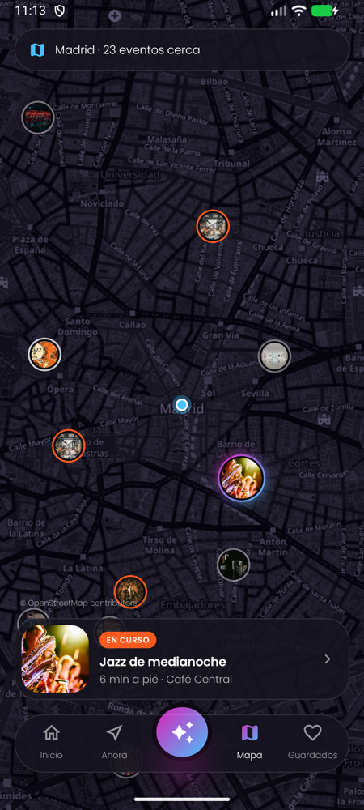
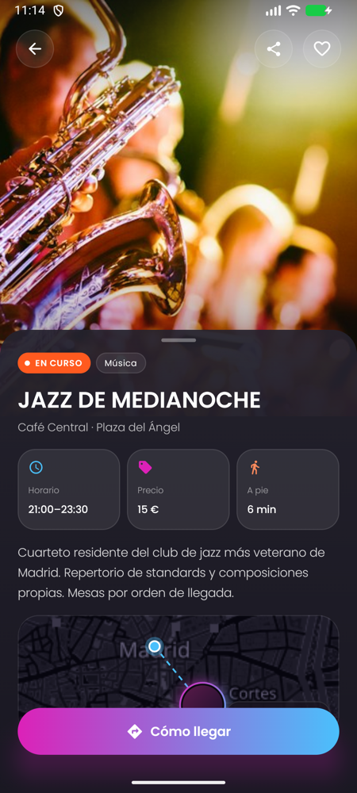
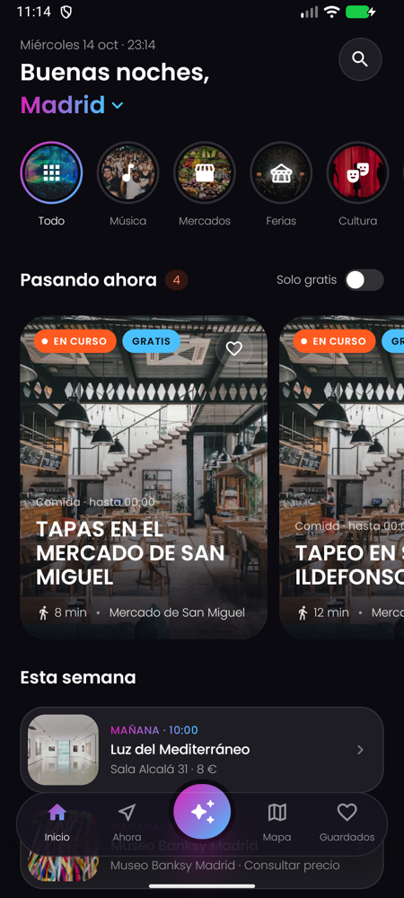
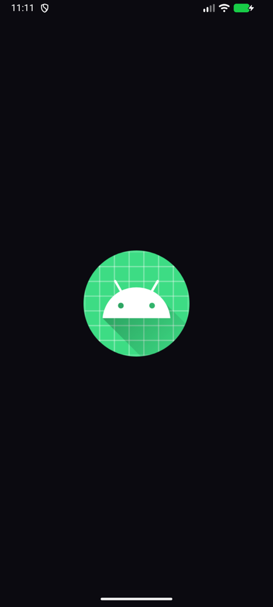
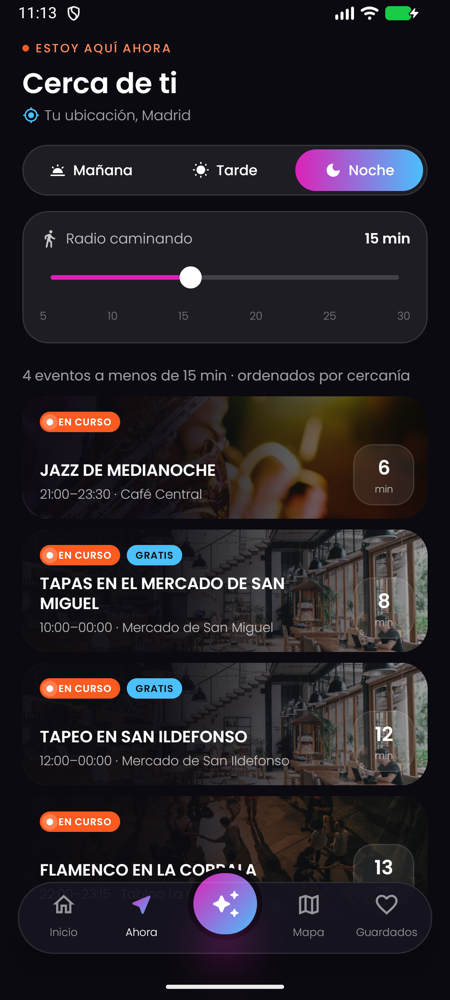
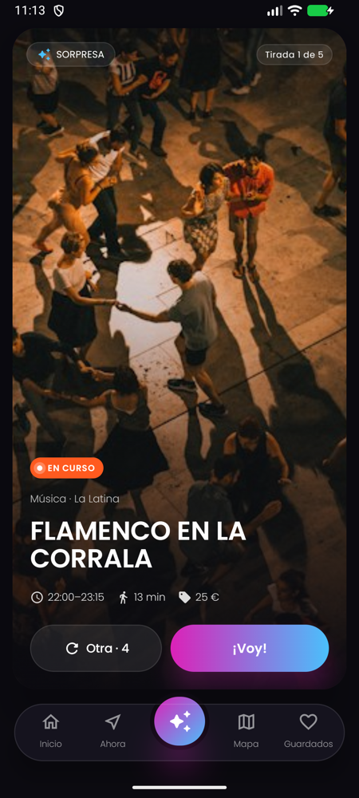

La app para viajeros que muestra lo que está pasando ahora en la ciudad: conciertos, mercados, ferias y cultura, empezando por lo que queda cerca a pie.



Capturas reales de la app en un teléfono Android. Desliza para ver todas.



Pensada para quien llega a una ciudad y quiere saber qué hacer en este momento, sin buscar en diez páginas.
Eventos de la mañana, tarde o noche a menos de N minutos a pie, ordenados por cercanía.
Un evento al azar que está pasando o empieza en las próximas 3 horas, a menos de 30 minutos.
Mapa oscuro de OpenStreetMap y rutas a pie, en bici o en carro, con tu ubicación en vivo.
Deslizador de presupuesto en la moneda de la ciudad e interruptor Solo gratis.
Aviso una hora antes de cada evento guardado, con la hora de la ciudad del evento.
Búsqueda en lenguaje natural, resúmenes y traducción de descripciones.
La ciudad sale del GPS o se busca por nombre; moneda y zona horaria se adaptan.
Los eventos guardados se ven sin internet y la app avisa qué pestañas necesitan red.
Con sesión iniciada, tus guardados se sincronizan en la nube entre teléfonos.
Arquitectura MVVM por capas, con las fuentes de datos inyectadas con Hilt y pruebas automáticas en GitHub Actions.